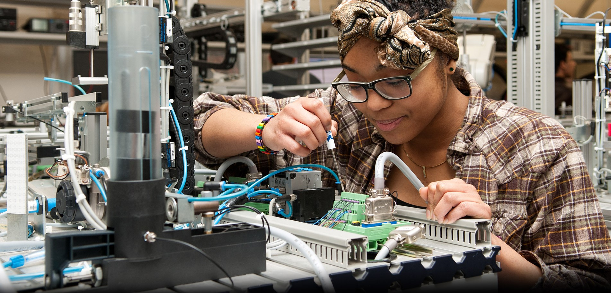
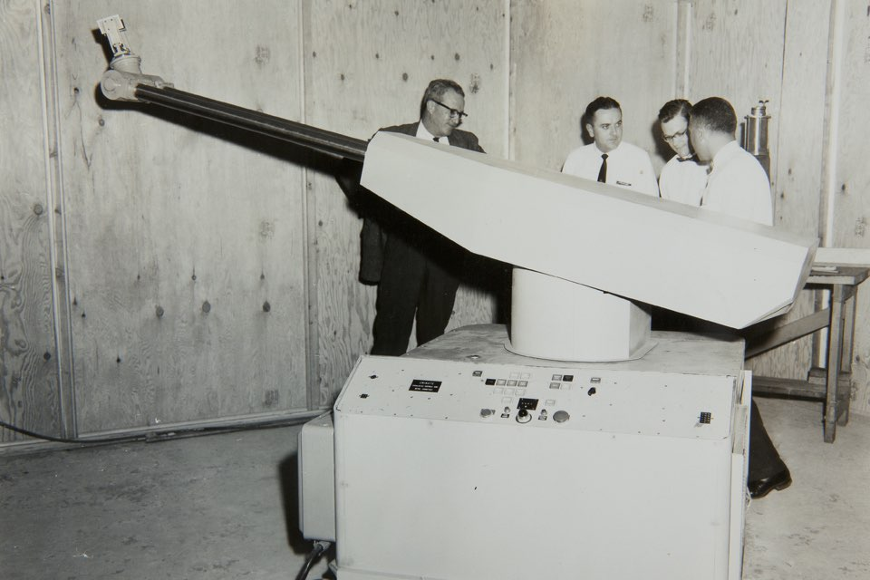
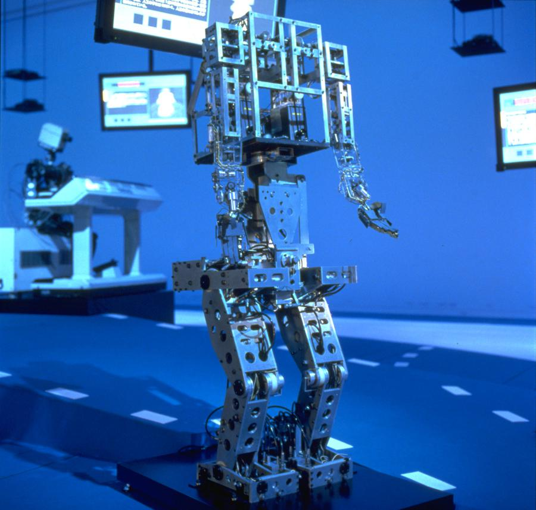
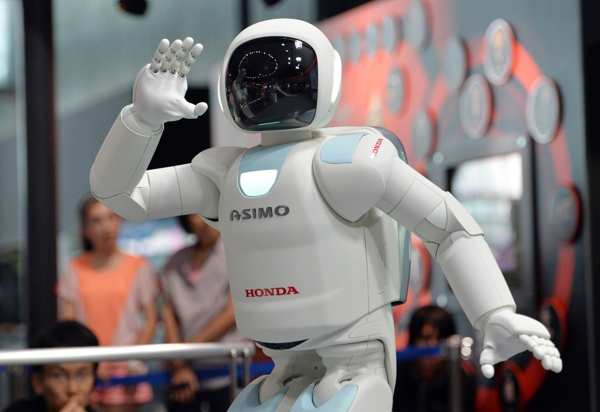

First coined in the late 1960s, “mechatronics” is now a part of everyday life. Mechatronics is what allows you to ask Alexa about the weather, puts the “control” in “cruise control”, and enables you to watch live video of your pets when you’re at work. At its most basic definition, mechatronics is integrating mechanized systems with electronic, control, and computer systems. Since its origin, mechatronics has been tied to robotics. Having multiple systems operating in conjunction and seamlessly communicating has enabled robots to go from a robotic arm used in diecasting to an artificial intelligence-based humanoid robot.
Unimate is considered to be the world’s first industrial robot. With its first prototype released in 1958, Unimate was the first mass-produced robot used for factory automation. Unimate was used by General Motors in the diecasting process, which involved extracting hot metal automotive parts from a die, a task dangerous for humans. Unimate was able to store digital commands that provided the steps for the robot to complete its work.
The first full-scale humanoid robot, WABOT-1, was introduced in 1971. The robot could communicate in Japanese, walk, and grasp objects. WABOT-2 was released in 1980 with the goal of showing more “human-like intelligence and dexterity” by being able to play a keyboard.
Touted as the “world’s most humanoid robot”, ASIMO was first created by Honda in 2000. ASIMO was able to walk on multiple surfaces, climb stairs, and respond to simple voice commands. With a focus on increasing autonomy, ASIMO underwent revisions in 2011 to advance the robot’s intelligence and incorporate autonomous behavior control technology. According to Honda, “Coordination between visual and auditory sensors enables ASIMO to simultaneously recognize a face and voice, enabling ASIMO to recognize the voices of multiple people who are speaking simultaneously.”
